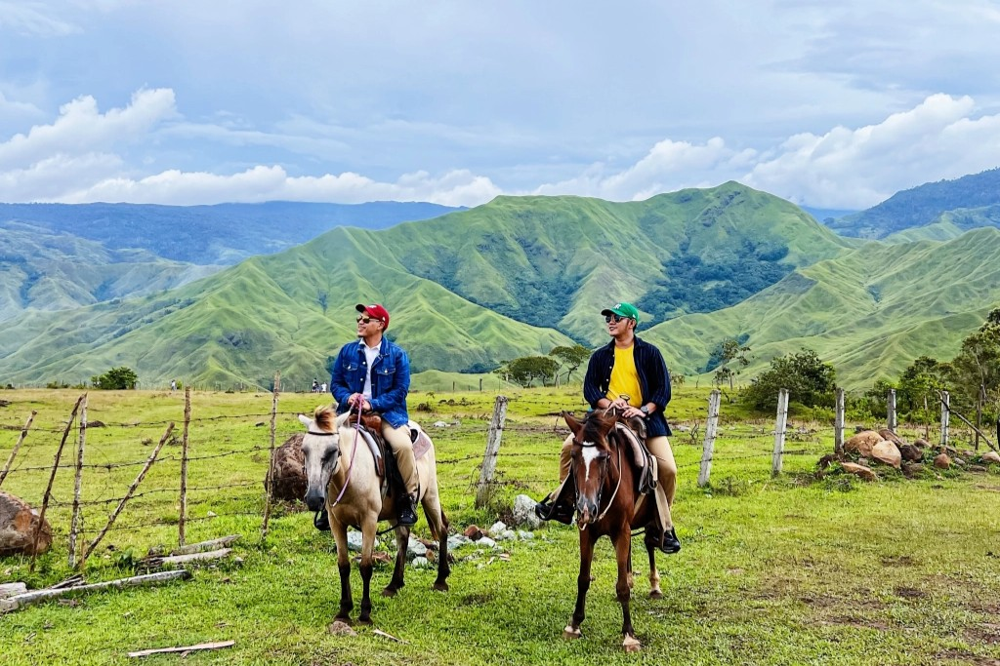
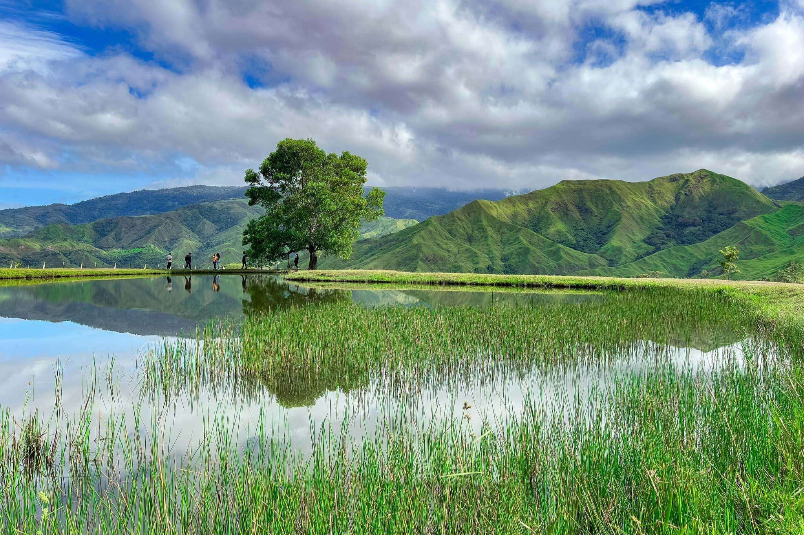
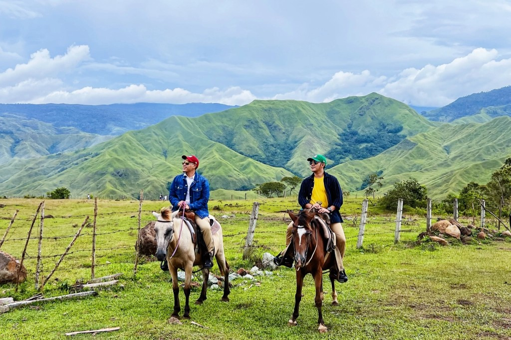
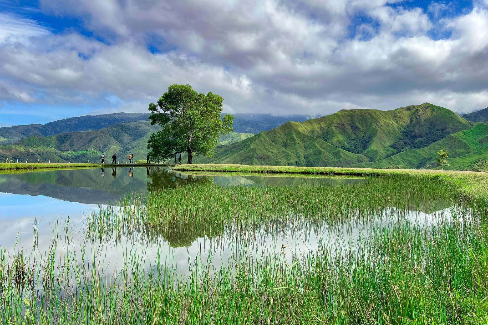

Barangay Capitan Bayong, Impasug‑ong, Bukidnon, 8702
The Communal Ranch is a 644-hectare tourism site owned by the local government, often called the “New Zealand of Mindanao” for its rolling hills, wide grasslands, and scenic landscapes. The ranch features vast grazing areas for cattle and horses, scenic ridges, and a heart-shaped man-made pond that perfectly reflects the surrounding mountains, making it a favorite spot for photography. Steeped in local cowboy culture, visitors can see vaqueros tending to the horses and cattle, adding an authentic touch of ranch life.
Over the years, the ranch has gained popularity not only for its natural beauty but also as a filming location for movies, earning it recognition as a prime destination for nature lovers and outdoor enthusiasts.
 


